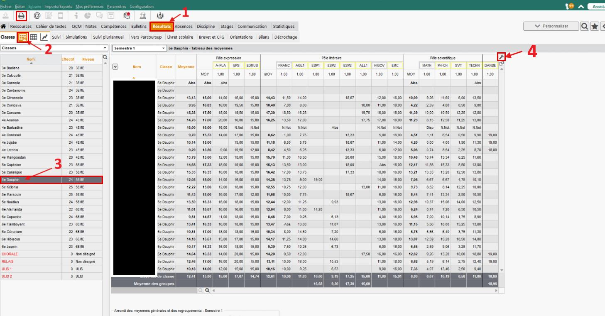

Tableau des résultats
Imprimer les résultats
Imprimer les résultats
d’une classe
Afficher les moyennes d’une classe, puis imprimer le tableau ou l’enregistrer en PDF.
Les clics sont indiqués sur les captures

Retrouvez ces repères dans le tutoriel.